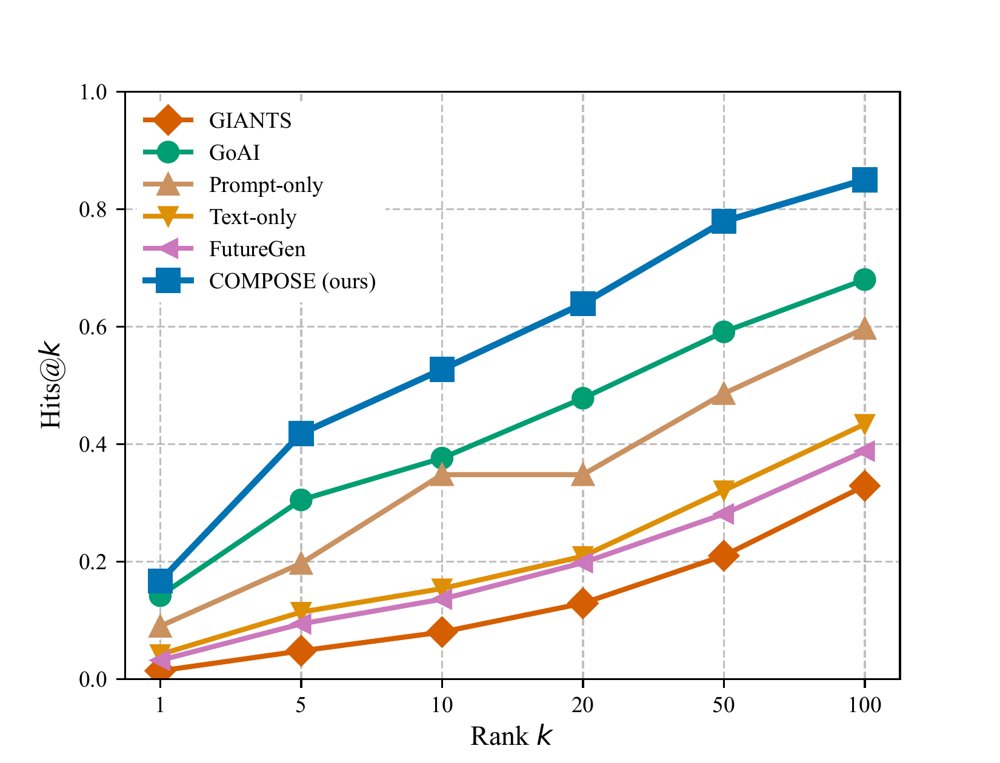

Anticipating future mathematical claims requires more than extrapolating from prior text: progress is shaped both by evolving scientific ideas and by the formal dependency structures that constrain valid results. Existing approaches capture only one of these signals.
We introduce grounded future mathematical generation — the task of predicting plausible future claims given an anchor paper, by jointly encoding its citation graph and its formal Mathlib theorem structure. We build a dataset of 108K scientific–formal graph pairs from arXiv and Mathlib4 (up to 2023), and a temporally grounded retrieval benchmark of 47K future papers from 2024–2025.
We propose COMPOSE, a dual-graph encoder that fuses citation context and formal theorem structure to condition a DeepSeek-Math-7B decoder. COMPOSE achieves the best retrieval performance, recovering the correct future paper in the top 10 in 50.8% of cases on the confidence-stratified evaluation subset.
Standard future-paper prediction treats the problem as language modelling over text. COMPOSE reframes it: the model is given the citation neighbourhood of an anchor paper plus the Mathlib theorems closest to its topic, and must generate a theorem-level claim that will be proved in a paper published after the training cutoff.
Each training example is a triple (Gs, Gf, y*): the scientific citation subgraph, the Mathlib theorem dependency subgraph, and the abstract of the future paper used as retrieval target. At inference, the generated claim is embedded and used to retrieve from the 47K future-paper pool.
Up to 30 cited papers, each embedded with E5-large-v2 (1024-dim). A SimpleGNN aggregates over citation edges to produce 1152-dim node representations.
Top-K Mathlib theorems by cosine similarity to the anchor abstract, expanded via BFS through proof dependencies. Node features are DeepSeek-Math embeddings of Lean theorem statements.
Generated claims are embedded with a fine-tuned DeepSeek-Math encoder and retrieved from a 47K pool of papers published in 2024–2025. Primary metric: H@10.
We collect 108K paper–Mathlib graph pairs from arXiv (2000–2023). For each paper, theorem statements are matched to Mathlib theorems in two stages: embedding-based retrieval followed by formal-syntax filtering. Papers with at least one high-confidence match use both encoders; the remaining papers are trained with the citation encoder only.
Evaluation follows a strict temporal split. All test papers are from 2024–2025, unseen during training. We keep only anchor papers cited by at least 7 future papers in the pool, giving roughly 2K test queries against a 47K retrieval pool.
Both graph encoders use the same SimpleGNN backbone but differ in node initialization. Enc1 uses E5-large-v2 abstract embeddings; enc2 uses DeepSeek-Math embeddings of Lean theorem statements. After two GNN hops, a Bridge MLP projects node features into a shared 4224-dim latent space.
A single bidirectional cross-attention block lets the scientific graph attend to the formal graph and vice versa. The resulting fused representations are injected as cross-attention keys/values into eight evenly spaced layers of DeepSeek-Math-7B. Only those cross-attention weights are trained — 10.7% of total parameters.
Train enc1 and enc2 jointly with link prediction (Llink), cross-domain alignment (Lalign), and informal↔formal contrastive loss (Lcross). The decoder is frozen throughout.
Cross-attention weights in the decoder are unfrozen. Training combines LCE (autoregressive generation) with Lmargin, which penalises the model for generating the same output regardless of the graph context.
We evaluate on the full test set (47K pool). COMPOSE achieves H@10 = 0.508, compared to 0.410 for CoI-GPT4 and 0.080 for GIANTS. The Gap column measures cosine similarity to the target minus cosine to 500 random negatives.
| Model | H@10 | H@100 | Gap |
|---|---|---|---|
| COMPOSE (ours) | 0.508 | 0.808 | 0.240 |
| CoI-GPT4 | 0.410 | 0.770 | 0.176 |
| Text-only (LoRA) | 0.369 | 0.738 | 0.177 |
| GoAI (DeepSeek-Math 7B) | 0.376 | 0.680 | 0.202 |
| Prompt-only (DeepSeek-Math 7B) | 0.348 | 0.697 | 0.211 |
| GIANTS | 0.080 | 0.329 | 0.207 |
| Fixed NN (abstracts + main theorem) | 0.068 | 0.392 | 0.108 |

H@k retrieval curves (k = 1 to 100) on the confidence-stratified subset. COMPOSE (blue squares) leads at k = 5, 10, and 20.
| Model | H@10 | H@100 | Gap |
|---|---|---|---|
| Full graph (ours) | 0.750 | 0.845 | 0.201 |
| Formal-graph only (no Gs) | 0.510 | 0.810 | 0.141 |
| w/o stage-1 pretraining | 0.240 | 0.505 | 0.093 |
| w/o bidirectional fusion | 0.195 | 0.530 | 0.090 |
| Paper-graph only (no Gf) | 0.075 | 0.260 | 0.043 |
Removing Gf drops H@10 from 0.750 to 0.075 — the largest single drop — confirming that Mathlib formal structure is the primary driver. Removing bidirectional fusion drops it to 0.195, showing that cross-encoder interaction is essential.
We show COMPOSE side-by-side with baselines on two representative examples from the test set. In each case the model receives only the anchor paper title as text; all mathematical context is injected via the citation and Mathlib graphs. Similarity scores are cosine similarity to the ground-truth future paper embedding.
Example 1 — Distributed Nash Equilibrium (arXiv:1212.6235 — game theory / optimization)
Ground-truth future paper
"Noncooperative game-theoretic tools have been increasingly used to study many important resource allocation problems in communications, networking, smart grids, and portfolio optimization. In this paper, we consider a general class of convex Nash Equilibrium Problems (NEPs), where each player aims to solve an arbitrary smooth convex optimization problem."
| Model | Generated Output | Sim | H@10 |
|---|---|---|---|
| COMPOSE | We propose an algorithm that solves monotone game problems in which players have different local objectives but share some common affine inequalities as well as their individual ones (e.g., capacity limits). Convergence properties under mild assumptions using variational analysis combined with Lyapunov arguments… | 0.910 | ✓ rank 2 |
| Text-only (LoRA) | We prove that the game admits a unique Nash equilibrium, and that this equilibrium is the solution of a certain convex optimization problem… [highest sim, rank 26 — fails] | 0.964 | ✗ |
| GoAI | In an N-coalition non-cooperative game, if the players in the same coalition cooperatively minimize the sum of their individual costs… | 0.910 | ✓ rank 9 |
| Prompt-only | Based on the abstract and related papers, the main theorem could be a result about the convergence of a gradient-based algorithm for distributed Nash equilibrium computation… | 0.805 | ✓ |
Text-only (LoRA) achieves the highest embedding similarity (0.964) with a concise Nash equilibrium statement, yet fails at rank 26. COMPOSE (0.910, rank 2) generates richer context about monotone games and variational analysis — the broader framework the ground truth actually belongs to — enabling successful retrieval. A decontextualised correct statement is not enough without graph grounding.
Example 2 — Koopman Operator Convergence (arXiv:2206.13659 — dynamical systems)
Ground-truth future paper
"We develop an algebraic framework for sequential data assimilation of partially observed dynamical systems. In this framework, Bayesian data assimilation is embedded in a non-abelian operator algebra… the forecast step of data assimilation is represented by a quantum operation induced by the Koopman operator of the dynamical system."
| Model | Generated Output | Sim | H@10 |
|---|---|---|---|
| COMPOSE | The authors prove a convergence theorem for extended dynamic mode decomposition applied with finite-rank approximations and show how this relates to approximating eigenfunctions and eigenvalues associated with dynamical systems governed by ergodic measures, using empirical data samples only… | 0.934 | ✓ |
| Text-only (LoRA) | We prove that the eigenvalues of the matrix KNM approximate the eigenvalues of KMN when M → ∞. [higher sim, rank 34 — fails] | 0.945 | ✗ |
| Prompt-only | Based on the provided abstract and related papers, it seems that the main focus is on using Koopman operator theory to classify and compare iterative algorithms… | 0.708 | ✗ |
| GoAI | Let K be the Koopman operator acting on the space of observables L²(μ), where μ is an ergodic measure. Then, the eigenvalues of K are contained in the unit circle… | 0.402 | ✗ |
COMPOSE (sim 0.934, rank 1) generates a precise description of EDMD convergence with eigenfunctions and ergodic measures — directly matching the ground truth's Koopman operator framework. Notably, Text-only (LoRA) achieves higher embedding similarity (0.945) with a narrow eigenvalue statement, yet fails to retrieve (rank 34) — showing that a correct but decontextualised statement is insufficient without graph conditioning.
Our alignment pipeline finds high-confidence Mathlib matches for only 16.9% of paper theorems; the remaining anchor papers run with the citation encoder only. Evaluation is bounded by the 47K pool, so novel work outside that window is invisible to our retrieval metric.
All experiments are on mathematics. Whether the approach transfers to other domains with formal libraries (Coq, Isabelle) remains open. We also do not verify formal provability of generated theorems — connecting generation with automated verification is a natural next step.
@article{busbib2026compose,
title = {{COMPOSE}: Composing Future Theorems from Citations and Formal Structure},
author = {Busbib, David and Werman, Michael},
journal = {arXiv preprint},
year = {2026}
}